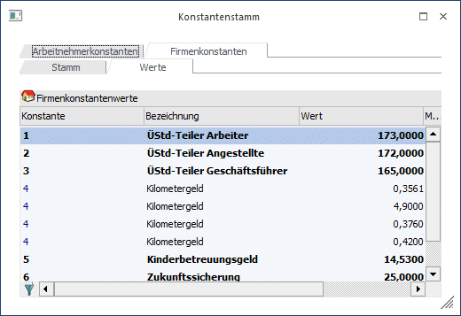

Konstanten sind Daten, die immer gleich bleiben bzw. für die gesamte Firma Gültigkeit haben. Die WinLine unterscheidet zwischen zwei unterschiedlichen Konstantenbereichen:
ü Arbeitnehmerkonstanten
Unter
Arbeitnehmerkonstanten versteht man verschiedene Bezeichnungen für Werte, die
pro Arbeitnehmer gespeichert werden - dadurch wird die Anlage von AN-Stammdaten
erleichtert. Auf diese Werte kann dann z.B. über die Formel zugegriffen
werden.
ü
Firmenkonstanten
Firmenkonstanten sind Fixbeträge / fixe
Stundenzahlen, die bei der Abrechnung für die Ermittlung von Bezügen verwendet
werden.
Beträge werden immer dann als Firmenkonstanten festgelegt, wenn sie
für eine Vielzahl von Arbeitnehmern Gültigkeit haben.
Beispiele:
Fixbeträge, die im Firmenstamm als Konstante gespeichert werden können sind z.B. Kilometergeld, allgemeingültige Erschwerniszulagen, Stunden pro Monat, Stundenteiler für Überstundenberechnung etc.
Vorgangsweise
Nachdem das Fenster geöffnet wurde, kann zuerst entschieden werden, welche Datenbereiche bearbeitet werden sollen, wobei die Datenbereiche in unterschiedliche Register unterteilt sind:
Arbeitnehmerkonstanten
Wenn das Register "Arbeitnehmerkonstanten" ausgewählt wurde, kann nur das Feld
Ø Bezeichnung
bearbeitet werden. Wenn neue Konstanten angelegt werden, wird die Nummer dazu automatisch vom Programm vergeben. Es sind beliebig viele AN-Konstanten möglich.
Firmenkonstanten
Wenn das Register "Firmenkonstanten" gewählt wurde, stehen hier 2 weitere Register zur Verfügung:
Ø Stamm
Im Register "Stamm" können die Bezeichnungen der Firmenkonstanten definiert werden, wobei nur das Feld
Ø Bezeichnung
bearbeitet werden kann. Wenn neue Firmenkonstanten angelegt werden, wird die Nummer dazu automatisch vom Programm vergeben. Es sind beliebig viele Konstanten möglich.
Ø Werte
In diesem Register können die Konstanten mit ihren Werten hinterlegt werden, wobei folgende Eingabefelder zur Verfügung stehen:
Ø Konstante
Hier wird die Konstantennummer eingetragen. Durch Drücken der F9-Taste kann nach allen angelegten Firmen-Konstanten gesucht werden. Eine Konstante kann auch öfters vergeben werden (um z.B. unterjährige Änderungen abzubilden).
Ø Bezeichnung
Hier wird die Bezeichnung der Konstante angezeigt.
Ø Wert
In diesem Feld wird der Wert der Konstante eingetragen, wobei der Wert bis zu 4 Nachkommastellen haben kann. Abhängig von der Formel, die mit dieser Konstante rechnet, wird dieser Wert weiterbehandelt.

Ø Monat von
Aus der Auswahllistbox kann das Monat gewählt werden, ab dem diese Konstante ihre Gültigkeit hat (z.B. wenn ein Wert erst ab Mai gilt).
Ø Jahr von
Hier wird das Jahr eingetragen, in dem die Konstante gültig ist. Standardmäßig wird immer 0 vorgeschlagen. Das bedeutet, dass die Konstante immer verwendet wird. Soll die Konstante nur beschränkt verwendet werden, kann hier die Jahreszahl eingetragen werden.
Ø Monat bis
Aus der Auswahllistbox kann das Monat gewählt werden, bis zu dem diese Konstante ihre Gültigkeit hat (z.B. wenn ein Wert nur bis August Gültigkeit hat).
Ø Jahr bis
Hier wird das Jahr eingetragen, in dem die Konstante gültig ist. Standardmäßig wird immer 0 vorgeschlagen. Das bedeutet, dass die Konstante immer verwendet wird. Soll die Konstante nur beschränkt verwendet werden, kann hier die Jahreszahl eingetragen werden.
Ø Aktuell gültige Konstanten anzeigen - Button
Standardmäßig werden immer alle erfassten Firmenkonstanten angezeigt. Wenn eine History der Firmenkonstanten mitgeführt wird, können das mitunter mehrere Einträge sein. Durch Anklicken dieses Buttons werden nur noch die Firmenkonstanten angezeigt, die aktuell (bezogen auf das aktuelle Abrechnungsmonat) gültig sind. Damit wird die Ansicht der Firmenkonstanten übersichtlicher.
Durch Drücken der F5-Taste werden die Änderungen gespeichert. Durch Drücken der ESC-Taste werden alle Änderungen verworfen.